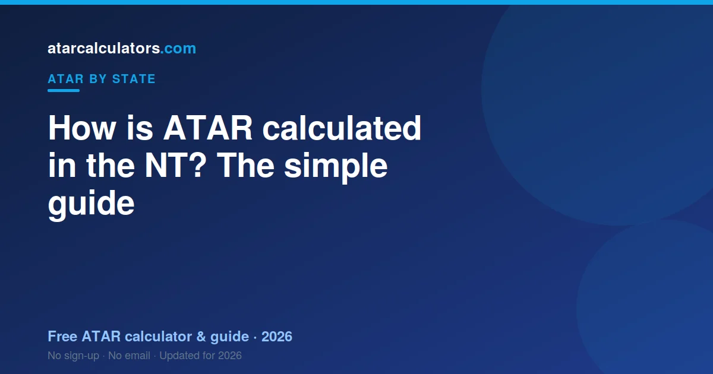
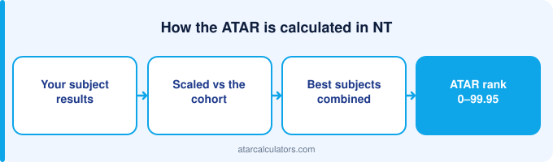

In the Northern Territory, your ATAR is built from your scaled NTCET results. The NTCET runs on the SACE framework, the same system used in South Australia. SATAC takes your best three scaled scores and adds a flexible option to form a university aggregate, out of 90. It then ranks that aggregate into an ATAR between 0.00 and 99.95. You also need to complete your NTCET to receive an ATAR.
Key takeaways
- Your ATAR is a rank from 0.00 to 99.95. It is not an average of your marks.
- The NTCET runs on the SACE framework, the same system as South Australia.
- Your ATAR comes from your best three scaled scores, plus a flexible option.
- Together these form a university aggregate out of 90.
- SATAC scales your scores and works out your ATAR.
- Charles Darwin University (CDU) is the NT’s main university.
- The same ATAR is used by universities across Australia.

An ATAR is a rank, not a mark
Your ATAR is a rank. It shows where you sit compared to other students your age in the NT. It is not the average of your marks.
Think of it as a line-up. Every student your age stands in a line, from lowest to highest. Your ATAR shows your spot in that line. An ATAR of 90.00 means you are near the top, ahead of about 90% of your age group.
The scale runs from 0.00 to 99.95, in steps of 0.05. The lowest number normally reported is 30.00. Anything under that shows as ‘less than 30’.
Because it is a rank, two students with the same marks can still land in different spots. Scaling and subject choice both play a part. You can try our NT ATAR calculator to see an estimate for your own subjects.
What NTCET is and how you qualify
The NTCET is the Northern Territory certificate, and it runs on the SACE framework. That means Territory students follow South Australian rules and SATAC calculates the ATAR.
How your university aggregate is built
Your NT aggregate follows the SACE model: best three scaled Stage 2 scores in full plus half a fourth, out of 90.
A simple worked example
Work the example with the NTCET numbers, which are the SACE numbers: three in full, one at half, out of 90.
How SATAC scaling works
Scaling keeps things fair between subjects. A score of 15 in one subject is not always as hard to earn as 15 in another. Scaling adjusts for that.
SATAC scales each subject by looking at the whole group who took it. If a subject is full of high-achieving students, it tends to scale up. If a subject has a weaker overall group, it can scale down.
This is about the group, not you alone. You do not get scaled up just for picking a ‘hard’ subject. You get a fair score based on how your subject group performed across all their subjects.
So chasing an ‘easy’ subject can backfire. The smarter move is to do well in subjects you are strong in. See our guide to the best scaling subjects in the NT for how this plays out.
Courses and prerequisites you need
To count, subjects must be Stage 2 with 90 credits at that level. Territory subject offerings are narrower than South Australia’s, which shapes what is available to you rather than how it is counted.
Who does what: your school, SATAC and CDU
A few groups play a part in your ATAR. It helps to know who does what.
Your school teaches your subjects and runs your assessments, within the SACE framework. SATAC then scales your scores, builds your aggregate, and works out your ATAR. SATAC also manages university applications for the NT.
Charles Darwin University, or CDU, is the NT’s main university, where many students apply. For a full breakdown of SATAC’s role, see our guide to SATAC in the NT.
Bonus points and adjustment
Your ATAR is not always the final number a university uses. Universities can add adjustment points, sometimes called bonus points.
These points lift your selection rank, which sits on top of your ATAR. You might earn them for certain subjects, for where you live, or for other eligible reasons.
So a course with a cutoff of 80 might still be reachable with an ATAR just under 80, once adjustments apply. Our selection rank calculator shows how the numbers change.
Is an NT ATAR used interstate?
Your NT ATAR is a national rank, directly comparable interstate. That matters in the Territory, where many students look south for university.
Common mistakes students make
The commonest Territory mistake is assuming the NTCET is its own system. It is the SACE framework — South Australian rules, calculated by SATAC.
What happens on results day
Your NTCET results and your ATAR come out in mid-to-late December. Your results are released through the school system, and SATAC releases your ATAR.
After that, university offers arrive in rounds, starting in December and January. If you do not get your first choice straight away, later rounds still run for courses with places left.
For the exact dates each year, see our NT ATAR release date guide, and always confirm on the SATAC site close to the time.
Estimate your NT ATAR
The best way to understand all this is to try it with your own numbers. Our free NT ATAR calculator lets you enter your scores. It then shows an estimated ATAR using the same aggregate structure.
No estimate can be exact before results day. Scaling depends on the whole group, and that is only known after exams. So treat any estimate as a guide, not a promise.
Still, an early estimate is useful. It shows you if you are on track for your goal. If there is a gap, you have time to act on it.
Completing the NTCET first
NTCET completion follows the SACE pattern: 200 credits overall with 90 at Stage 2, plus literacy and numeracy requirements and the Research Project.
Why Stage 2 is what counts
Stage 2 is Year 12 in the NTCET, as in the SACE. Roughly 70% school assessment, about 30% external.
How credits shape your aggregate
Credits measure how much a subject is worth. The NTCET uses the SACE credit structure, so 90 at Stage 2 is the requirement.
Common questions
How is the ATAR calculated in the NT?
The NTCET runs on the SACE framework, so it works like South Australia. SATAC scales your Stage 2 scores, adds your best three plus a flexible option into an aggregate out of 90, and ranks that into an ATAR between 0.00 and 99.95.
Who calculates the NT ATAR?
SATAC calculates the NT ATAR. It scales your NTCET Stage 2 scores, adds your best three plus a flexible option into an aggregate, and ranks that into an ATAR. Your school runs your assessments within the SACE framework.
What is the NTCET?
NTCET stands for the Northern Territory Certificate of Education and Training. It runs on the SACE framework, the same system used in South Australia, so the way it works is very similar to SA.
How does NT scaling work?
SATAC scales each subject by how strong its group of students was that year. Subjects with many high-achieving students tend to scale up. Scaling keeps subjects fair, so no choice is unfairly rewarded or punished.
Do I have to complete the NTCET to get an ATAR?
Yes. You must complete your NTCET, including its requirements, to receive an ATAR. You can complete the NTCET without an ATAR, but not the other way around.
What is the highest NT ATAR?
The highest ATAR is 99.95, which matches the top of the aggregate scale of 90. ATARs run down to 30.00, and results below that are reported as 'less than 30'.
What is the main university in the NT?
Charles Darwin University (CDU) is the NT's main university. Because the NT uses SATAC, many students also apply to universities in South Australia and interstate.
Can I estimate my ATAR before results?
Yes. A calculator can give you an estimate from your expected scores. It cannot be exact, because scaling depends on the whole cohort, but it is a useful guide for planning.